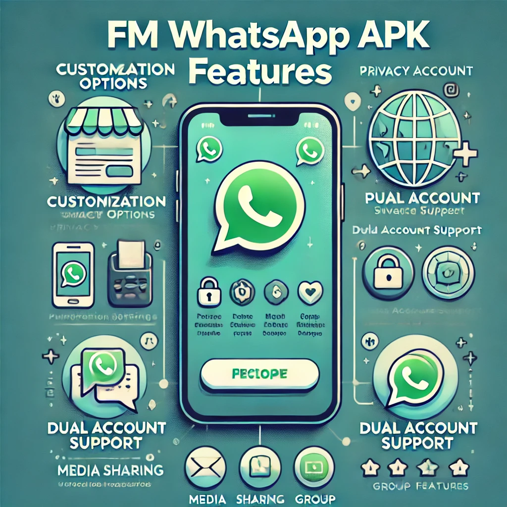

FM WhatsApp APK Download: A Guide to Getting the Best WhatsApp Experience
In a world where instant messaging is a part of our daily lives, WhatsApp has become one of the most popular apps on the planet. But as we all know, sometimes, the default WhatsApp app doesn't offer everything we need. Enter FM WhatsApp – a modified version of WhatsApp that offers more features, customization, and flexibility than the original app. If you're tired of the same old features and want something a little extra, FM WhatsApp might just be the upgrade you’ve been looking for.
In this article, we’ll walk you through what FM WhatsApp is, how to download it, its features, and some of the things you should know before using it. And don’t worry – we’ll keep it light, easy to understand, and maybe throw in a bit of humor to make it an enjoyable read!
What is FM WhatsApp?
FM WhatsApp is a third-party, modified version of the original WhatsApp application. It is developed by a group of developers who decided to add extra features and give users more control over their WhatsApp experience. It’s an APK (Android Application Package) file, meaning it’s available for Android devices.
Now, before you start wondering if it’s some kind of “magical” WhatsApp, let’s clarify: FM WhatsApp isn’t officially endorsed by WhatsApp or Facebook (which owns WhatsApp). Instead, it’s a modded version, created to enhance the user experience and offer features that the original WhatsApp app doesn’t have.
For those who love customization and tweaking their apps, FM WhatsApp brings the fun. It allows you to change the interface, hide your online status, set privacy features that aren't available on the standard WhatsApp, and much more. It's like adding a turbo booster to your WhatsApp app. So, if you're someone who loves exploring new features and making your app stand out, FM WhatsApp APK Download might be just what you need.
Why Should You Consider FM WhatsApp?
You might be wondering, “Why bother downloading FM WhatsApp when WhatsApp already does the job?” Well, here’s the thing: FM WhatsApp gives you all the core features of WhatsApp, plus some bonus tools that make it stand out. Let’s dive into some of these features to help you understand why it’s worth considering:
- Customization Galore: One of the best things about FM WhatsApp is the level of customization it offers. You can change themes, fonts, colors, and even the style of your chat screen. It’s basically WhatsApp, but with more style and flair. If you like to make your apps look unique and reflect your personality, FM WhatsApp gives you the tools to do that.
- Privacy Features: Privacy is a big concern for many WhatsApp users. Fortunately, FM WhatsApp takes privacy to the next level. Here are a few of the cool privacy features you can enjoy:
- Hide your online status: You can use WhatsApp without worrying about someone seeing when you’re online.
- Freeze Last Seen: Tired of people knowing when you were last online? FM WhatsApp lets you freeze your last seen timestamp so no one knows exactly when you were last active.
- Hide Blue Ticks: If you don’t want people to know whether you’ve read their messages, FM WhatsApp lets you hide the blue ticks. No more pressure to reply immediately!
- Hide Typing and Recording Status: You can also hide when you’re typing or recording a message. This is perfect for when you’re drafting a long reply but don’t want to give the impression that you’re busy.
- Better Media Sharing: FM WhatsApp allows you to share media files that go beyond the limits set by WhatsApp. For instance, you can send videos up to 1GB in size (compared to WhatsApp's standard limit of 16MB). It also supports more file formats, making it easier to share things like APKs, large PDFs, and other files that WhatsApp doesn’t normally support.
- Enhanced Group Features: If you’re someone who’s part of multiple WhatsApp groups (let's be honest, who isn’t?), FM WhatsApp will make your group chats more manageable. You can:
- Send larger messages: Say goodbye to character limits when sending messages to groups.
- More than 250 members: With FM WhatsApp, you can create groups with more than 250 participants, unlike the standard WhatsApp limit of 256.
- Dual WhatsApp Accounts: Want to use two WhatsApp accounts on the same phone? FM WhatsApp makes it possible to run multiple accounts. So, if you’ve got a personal number and a work number, you can switch between them without needing two devices. It's a great feature for those who like to keep work and personal life separate – or for people who just want to enjoy the luxury of two WhatsApp accounts on a single phone.
How to Download FM WhatsApp APK?
To download FM WhatsApp, follow these simple steps:
Step 1: Allow Installation from Unknown Sources
Go to your device’s settings and enable "Install from Unknown Sources" to allow the installation of APK files.
Step 2: Download the FM WhatsApp APK
Find a trusted website to download the FM WhatsApp APK. Make sure the website is reliable to avoid malicious files.
Step 3: Install FM WhatsApp
Once the APK is downloaded, locate it in your file manager and tap to install. Follow the on-screen instructions.
Step 4: Set Up FM WhatsApp
Open the app, verify your phone number, and start using FM WhatsApp with all its exciting features!
Is FM WhatsApp Safe?
While FM WhatsApp offers fantastic features, it's important to be cautious. Here’s what you need to know:
- Security Risks: Since FM WhatsApp is not officially endorsed, there could be potential security risks. Always download from trusted sources.
- Ban Risk: WhatsApp can ban accounts using modded versions, so use FM WhatsApp at your own risk.
- Data Privacy: Since it’s a third-party app, there might be concerns regarding your data privacy.
Conclusion
FM WhatsApp APK is a fantastic alternative for anyone looking to unlock more features, customization, and flexibility in their WhatsApp experience. From privacy settings to customization options, FM WhatsApp offers a unique experience that the standard WhatsApp app doesn't provide.
However, before you dive in, make sure you understand the risks associated with using a third-party app. If you don’t mind these risks and love exploring new features, FM WhatsApp is worth checking out. So go ahead, download it, and take your WhatsApp game to the next level!
And remember, with great power comes great responsibility – use those extra privacy features wisely, and don’t go overboard with the customization. Your WhatsApp, your rules!